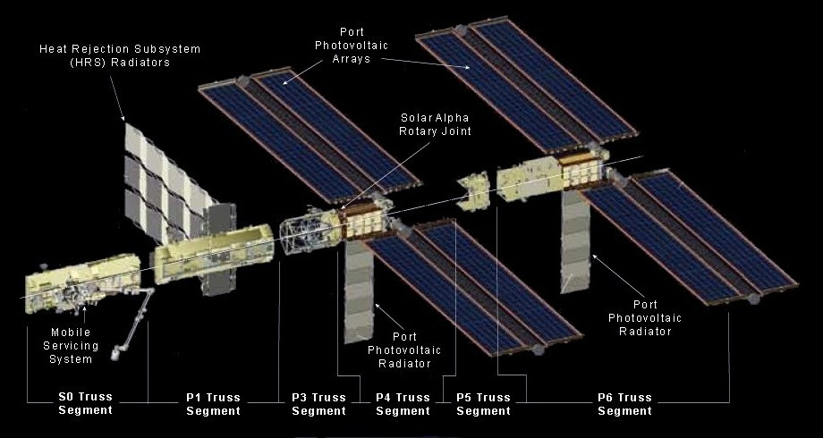
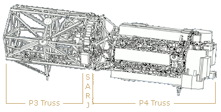

International Space Station (iss)
integrated truss structure [its]
The ITS is attached to the top of the U.S. Laboratory (Destiny) and it supports the AMS, ESP-3, All ELCs, iROSA and the MSS.

The ITS is attached to the top of the U.S. Laboratory (Destiny) and it supports the AMS, ESP-3, All ELCs, iROSA and the MSS.
The Integrated Truss Structure (ITS) is the ISS's main exterior framework. It supports equipment for power generation and management, heat dissipation and station construction and maintenance. The major items supported by the ITS are :-
Solar Arrays - for power generation. The ITS positions the arrays clear of the Station.
Radiators - for heat dissipation. The ITS positions the radiator panels clear of the Station.
Mobile Servicing System (MSS) - to allow the Station robot arm greater coverage of the Station.
The ITS is built up from eleven truss segments delivered and installed on separate shuttle missions. These are connected end to end to form a rigid beam. The central segment and is permanently attached by struts to the top of Destiny Laboratory while the other truss segments cantilever either side, perpendicular to the Station's main axis. They have no other structural connection to the Station.
The five truss segments on the starboard (right) side of the Station are designated 'S', while the five on the port (left) side are designated 'P'. The central segment is designated 'S0' even though it extends equally to the starboard and port.
The diagram to the right shows the ITS central truss segment (S0) and the port side truss segments. The starboard side segments are a mirror image of the port side segments, but otherwise similar.

ITS Center and Port Side Segments (Starboard side segments are mirror images)
[Click on a heading in the diagram to go to the description of that]
Note: There are no P0, P2 or S2 segments.
Following are summary descriptions of the truss segments which make up the ITS. More details are given in the sections below. Use the down arrow button to the left for quick access to each section.
The S0 Truss was attached to the top of the Destiny Laboratory in April 2002 [Flight 8A]. Its main functions are to:
1. - Provide support for other ITS truss segments.
2. - Support forward-facing rail track for the Mobile Servicing System (MSS).
3. - Act as the junction from which external power, data, video and ammonia are routed to the Station's pressurized modules.
4. - Provide mounting points for electronic equipment.
5. - Support the Station's four GPS antennas and two Rate Gyros.
The S1 Truss was attached to the starboard side of the S0 Truss in October 2002 [Flight 9A] while the P1 Truss was attached to the port side of the S0 Truss in November 2002 [Flight 11A].
The main functions of these segments are to:
1. - Provide support for other ITS truss segments.
2. - Support forward-facing rail track for the Mobile Servicing System (MSS).
3. - Initially support the Crew and Equipment Translation Aid (CETA) carts.
4. - Support radiator panels to dissipate heat from the truss' electronics boxes.
5. - Provide mounting points for for cameras and lights.
6. - Support equipment for S-band communications.
7. - Support equipment for UHF communications. (P1 truss only)
The P3 and P4 Truss segments were delivered assembled and attached to the port side of the P1 Truss in September 2006. [ Flight 12A]. The assembled S3 and S4 Truss segments were attached to the starboard side of the S1 Truss in June 2007 [Flight 13A].
The main functions of these segments are to:
1. - Provide support for other ITS segments.
2. - Support forward-facing rail track for the Mobile Servicing System (MSS) on P3 and S3.
3. - Support solar arrays for power generation.
4. - Support radiator panels to dissipate heat from the truss' electronics boxes.
5. - Allow pointing of the solar arrays with a joint where the P4 truss rotates about the fixed P3 truss.
A similar joint is provided between S3 and S4.
The P5 Truss was attached to the port side of the P4 Truss in December 2006 [Flight 12A.1] while the S5 Truss was attached to the starboard side of the S4 Truss in August 2007 [Flight 13A.1].
The main functions of these truss segments is to provide support for last ITS truss segments on each side. (P6 and S6)
The P6 Truss attaches to the port side of the P5 Truss while S6 Truss attaches to the starboard side of the S5 Truss.
The P6 Truss was originally attached to the top of the zenith one (Z1) truss in November 2000. It provided early power and cooling to the Station before the ITS was installed.
The main functions of these truss segments is to expand on the power and cooling capacity of the P4 and S4 segments.
The Central Truss Segment (S0) is the first element of the Station's main exterior framework. It is one of eleven integrated trusses that will be connected end to end to form a rigid beam called the Integrated Truss Structure (ITS). This framework supports equipment for power generation and management, heat dissipation and station construction and maintenance.
The S0 (Starboard Zero) truss is actually positioned centrally to the Station's axis and is permanently attached by struts to the top of the Destiny Laboratory. The other truss segments cantilever either side of Destiny, perpendicular to the Station's main axis. Their only physical connection to the Station will be through the S0 truss.
The S0 truss acts as the junction from which external utilities on the main truss are routed to the pressurized modules via umbilicals. These utilities include power, data, video and Active Thermal Control System ammonia.
It also provides a mounting point for electronic equipment such as the Main Bus Switching Units, DC-to-DC Converter Units, Secondary Power Distribution Assemblies, GPS antennas and Gyroscopes.
The S0 truss was delivered to the Station by Shuttle Atlantis STS-110 [Flight 8A] in April 2002. The truss and associated equipment were then installed and tested by the shuttle and station crews.
The permanent attachment of the S0 truss to the Destiny Module used the Module-to-Truss Segment Attach System (MTSAS). This consists of an active capture claw assembly on the Destiny Lab Cradle Assembly (LCA) and a capture bar on the bottom of the S0 truss.
During mating of S0 to the LCA, the capture claw engaged the bar on the S0 truss, drawing the truss down to the LCA interface for a semi-rigid structural hold. Permanent structural attachment was then accomplished by bolting 10 telescoping struts to Destiny. These struts not only support the S0 truss but also the rest of the ITS.
Length - 13.4 m (44 ft)
Height - 4.6 m (15 ft)
Width - 1.8 m (6 ft)
Weight - 12,247 kg (27,000 lb)
Material - Aluminium (mainly)
Shape - elongated hexagonal cross section with five bays along the long axis.
Access - open frame to allow EVA operations within the the bays.
Span of main truss - 91-m (300-ft)
Construction - The S0 truss was built by Boeing Human Space Flight and Exploration in Huntington Beach, California, U.S.A.
The company operations in Florida prepared it for launch. The Boeing Company is NASA's prime contractor on the ISS.
The S0 truss segment was delivered with its main auxiliary equipment pre-installed. After further equipment was also added during installation, the following equipment was operational on the truss:-
Thermal Control System (TCS): Active hardware on S0 truss is cooled through the use of the cold plates which function by running a working coolant (ammonia, for external hardware) between heat exchanger tubes beneath the ORU and a remotely located radiator. The radiator panel is located on the aft face of S0 truss and provides heat rejection for several of the S0 truss ORUs. This radiator was installed on a later mission.
Global Positioning System Antennas (GPS) [4]: The four GPS antenna assemblies were pre-installed on the exterior of the S0 truss. The GPS system on the ISS is required to prove a state vector with an accuracy of 3,000 feet (915 m) in position for a single position measurement and with an error of less than 50,000 feet (15.24 km) during 24 hours of propagation.
Rate Gyroscope Assemblies (RGAs) [2]: The Rate Gyroscope Assemblies (RGAs) provide a method for the ISS Guidance and Navigation Control sub-system to perform state vector determination independent of the U.S. GPS. Two RGAs were pre-installed on the aft port side of he S0 truss segment. The RGAs are composed of three ring laser gyros that determine changes in motion by measuring changes in the frequency of a reference laser beam using the Doppler effect. One ring laser gyro is assigned to measure motion in each of the three coordinate axes, with redundancy coming from the second unit in the set.
Power Distribution Control (ESSMDMs) [2]: Enhanced Space Station Multiplexer / De-multiplexers provide control capability for each of the S0 truss Remote Power Distribution Assemblies and associated Remote Power Control Modules.
Main Bus Switching Units (MBSUs) [4]: The Main Bus Switching Units or MBSUs perform power routing functions over electrical power buses within the ISS. The S0 truss is out fitted with four MBSUs each of which accepts power input from two power channels and distributes power to module internal and truss external Direct-current-to-direct-current switching units (DDCUs). This power distribution is performed using internal Remote Bus Isolation (RBI) switches, which may be remotely commanded to provide or remove power from downstream loads.
Umbilical Trays [4]: There are two fluid and two power and data trays which provide thermal, communications and electrical interfaces with other elements.
Crew and Equipment Translation Aid [CETA] Lights (3 off): These halogen light assemblies are mounted on boom assemblies and rated for exterior use. During the S0 installation mission, two CETA lights were used in EVA crew activities. The first was installed on Destiny while the second was installed on the Node zenith near the aft end cone.
Airlock Spur: The Airlock Spur is a structural beam out fitted with multiple EVA hand rails to facilitate translation by space walkers from the Joint Airlock to the forward side of the S0 truss and the Destiny module. Ten hand rails (seven long, three short) are installed on two faces of the beam to provide hand holds for crew translation. The Airlock Spur was pre-installed on the starboard aft side of S0 truss with a hinge pin joint attachment to it, and was bolted to the airlock on orbit.
Extravehicular Charged Particle Detection System (EVCPDS): The EVCPDS measures and characterizes the radiation environment on the ISS for documenting crew exposure for medical records, long-term risk assessment and for mapping the radiation levels within the ISS for dose management. The EVCPDS also provides near real-time data to confirm exposure rates during an off-nominal radiation even and it will provide data for improving environmental and transport computer models. Finally, the EVCPDS is used in conjunction with the Tissue Equivalent Proportional Counter and radiation dosimeters to characterize the primary and secondary radiation field inside the ISS.
The Mobile Transporter (MT) was delivered to the Station pre-installed on the S0 truss. It is Part of the Mobile Servicing System (MSS) which carries the Canadarm2 robot arm. The MT is mounted on a rail track on the forward face of the S0 truss. This track extends to the S3 and P3 truss segments so that the MT and Canadarm2 is able to move up and down the length of the Station truss (ITS).
The S0 truss also contains the MT Trailing Umbilical System (TUS) cable reels, which feed out and reel in electrical cable to the MT as it travels along the truss. More details are given on the Mobile Servicing System Detail Page.
The S1 (Starboard One) truss was the second segment to be installed for the station's main exterior framework and the P1 (Port-One) truss was the third. These trusses are two of the eleven integrated trusses that are connected end to end to form a rigid beam called the Integrated Truss Structure (ITS). This framework supports equipment for power generation and management, heat dissipation and station construction and maintenance.
The S1 truss is the first starboard (right) segment and is permanently attached to the starboard end of the S0 truss segment. The P1 truss is the first port (left) segment and is permanently attached to the port end of the S0 truss segment.
The other starboard and port truss segments are connected to the starboard end and port end of the S1 and P1 trusses respectively. Their only physical connection to the ISS is via the S0 truss.
Some external utilities on the main truss are routed, via umbilicals, through the S1 and P1 trusses to the S0 truss and then to the pressurized modules. These utilities include power, data, video and Active Thermal Control System ammonia. Both the S1 and P1 trusses provide extensions to the rail tracks on the S0 truss. These tracks support the Mobile Servicing System (MSS).
The P1 truss is the mirror image of the S1 Truss Segment and is similar in most respects. The main difference is the P1 truss has a UHF antenna system while the S1 truss has an S-band antenna system. The P1 truss does, however, allow for the attachment of S-band antennas.
The S1 and P1 truss segments were delivered with the following auxiliary equipment pre-installed
External Active Thermal Control Subsystem (EATCS)
Replacing the Early External Active Thermal Control Subsystem (EEATCS), EATCS provides a permanent system of thermal control for the U.S. Segment Internal Active Thermal Control Subsystem (IATCS) water loops and a number of external truss avionics.
It was activated during a later mission [Flight 12A.1]
EATCS equipment on the S1 truss includes :-
* A Pump Module (PM) Assembly [1 on each truss]
* An Ammonia Tank Assembly (ATA) [1 on each truss]
* A Nitrogen Tank Assembly (NTA) [1 on each truss]
* Radiator Orbital Replacement Units (ORUs) [3 on each truss]
* Radiator Beam Valve Modules (RBVMs) [6 on each truss]
* A Thermal Radiator Rotary Joint (TRRJ) [1 on each truss]
* Ammonia fluid lines, junction boxes, heaters and cold plates [on each truss]
Radiator Assembly
The entire radiator beam assembly (upper portion of the elements) rotates to keep the radiators in the shade. Eighteen launch locks kept the assembly together during launch and were then removed and stowed during an EVA.
Crew and Equipment Translation Aid [CETA]
The CETA Cart A (S1 truss) and Cart B (P1 truss) serve as mobile work platforms for future space walkers.
S-Band communications system (S1 Truss only)
Provides enhanced and extended voice and data capability. This is the second string of the S-Band communications subsystem. (referred to as string-1 or S-Band-S). It includes an S-Band Antenna Support Assembly (SASA) and a transponder and Baseband Signal Processor (BSP).
UHF communications system (P1 Truss only)
The Ultra High Frequency communications system provides enhanced and extended voice and data capability.
The specifications of both the S1 and P1 truss segments are as follows:-
Length - 13.8 m (45 ft)
Height - 4.6 m (15 ft)
Width - 1.8 m (6 ft)
Weight - 12,572 kg (27,717 lb)
Material - Aluminium (mainly)
Shape - elongated hexagonal cross section with five bays arrayed along the long axis.
Span of main truss - 91 m (300 ft)
The S1 and P1 truss segments were built by Boeing Human Space Flight and Exploration in Huntington Beach, California and Huntsville, Alabama U.S.A. The company operations in Florida prepared it for launch. The Boeing Company is NASA's prime contractor on the space station.
Also pre-integrated within the S1 and P1 truss segments are:-
* Space Station Multiplexer/De-multiplexer (SSMDMs) [2 on each truss]
* An external DC-to-DC Converter Unit (DDCU-E) [1 on each truss]
* Secondary Power Distribution Assemblies (SPDAs) [2 on each truss]
* Rotary Joint Motor Controllers (RJMCs) [2 on each truss]
* A passive Segment-to-Segment Attach System (SSAS) [1 on each truss]
* An active SSAS with two Bus Bolt Controllers (BBCs) [on each truss]
* Accelerometers [4 on each truss]
* Video Camera Support Assemblies (VCSAs) [2 on each truss] (also called "stanchions")
The S1 truss segment was delivered by Shuttle Atlantis STS-112 [Flight 9A] in October, 2002. It was then installed and tested by the shuttle and station crews. The P1 truss segment was delivered by Shuttle Endeavour STS-113 [Flight 11A] in November, 2002.
It was then installed and tested by the shuttle and station crews.
The P3 (Port-Three) and P4 (Port-Four) trusses were permanently joined together in the factory using a "Solar Alpha Rotary Joint (SARJ)". They were then delivered and installed on the port end of the Station's P1 Truss as a single unit. This was the forth/fifth segment to be installed for the Station's main exterior framework. These trusses are two of the eleven integrated trusses that are connected end to end to form a rigid beam called the Integrated Truss Structure (ITS). This framework supports equipment for power generation and management, heat dissipation and station construction and maintenance.
The S3 (Starboard-Three) and S4 (Starboard-Four) are a mirror image of the P3 and P4 trusses. S3 and S4 were also permanently joined together in the factory using a "Solar Alpha Rotary Joint (SARJ)". They were then delivered and installed on the starboard end of the Station's S1 Truss as a single unit. This was the sixth/seventh segment to be installed for the Station's ITS framework.
These new segments also provide a second and third set of Solar Array Wings (SAWs) and support utility routing and power distribution. The S4 and P4 truss segments provide a travel path for the Mobile Servicing System (MSS).
The Solar Alpha Rotary Joint (SARJ) enables the outboard solar arrays to always point to the sun by rotating like a Ferris wheel. The port SARJ on P3/P4 provides tracking for the P4 and P6 solar arrays. The starboard SARJ on S3/S4 provides tracking for the S4 and S6 solar arrays. The SARJ can rotate 360 degrees clockwise and counterclockwise. The SARJ also provides the structural interface between the P3 and 4 and S3 and 4 elements. It includes hardware to route power and data through the rotating SARJ interface to the outboard truss segments.▲
Race Rings
The SARJ includes an inboard and an outboard race ring, which provide the structural connection between the P3 and P4 elements (port SARJ) and S3 and S4 (starboard SARJ). Along the circumference of each race ring are gear teeth that mesh with the drive lock assembly (DLA) pinion gear to rotate the SARJ. The outboard race ring is used to rotate the SARJ.
Trundle Bearings
The 12 equally spaced trundle bearings hold the SARJ inboard and outboard race rings together. Each trundle bearing is fixed to the inboard race ring and is clamped onto the outboard race ring with a roller interface to allow for SARJ rotation.There are three rollers on the trundle bearing that interface with the outboard race ring. Each roller consists of two bearings: the primary and journal bearings. The primary bearing rotates. If the primary bearing seizes up, the journal bearings will begin rotating. There are micro-switches in the trundle bearing that allow the ground to know if the journal bearing is rotating.
Drive Lock Assembly (DLA)
Two Drive Lock Assemblies (DLAs) are responsible for rotating and locking the SARJ. Each DLA includes the engage-disengage mechanism (EDM) motor, drive motor, pinion gear, lock rack and two follower arms. The EDM motor is a stepper motor that pivots the lock rack and pinion gear about the lock/engage pivot point to the desired position.
The DLA positions are locked, engaged and neutral. For the locked position, the lock rack is in contact with the race ring gear teeth to prevent the SARJ from rotating. For the engaged position, the DLA pinion gear is meshed with the race ring gear to rotate the SARJ with the drive motor. In the neutral position, neither the lock rack nor pinion gear is engaged to the race ring gear. The follower arms, which are of the same design as the trundle bearings, are used to secure the DLA to the race ring.
With the launch of the P4 element, NASA will deploy a new External Wireless Instrumentation System (EWIS) for the first time. The system consists of accelerometers placed around the outboard truss elements of the integrated truss structure. The system allows engineers to gather real-time data during dynamic events that might cause higher vibrations (loads) on the truss elements.
The specifications of both the S3/S4 and P3/P4 truss segments are as follows:-
Length - 13.6 m (44.7 ft)
Height - 4.6 m (15.6 ft)
Width - 4.9 m (16 ft)
Weight - 15,823 kg (34,885 lb)
Material - Aluminium (mainly)
Shape - The P3 and S3 primary structure is hexagonal shaped and includes four bulkheads and six longerons. The secondary structure includes brackets, fittings, attach platforms, EVA equipment and miscellaneous mechanisms.
P3 and S3 were designed by the Boeing design team at Huntington Beach, Calif. Boeing (now Pratt and Whitney) Rocketdyne Power and Propulsion in Canoga Park, Calif. designed P4 and S4. Major Sub contractors were Lockheed Martin, Honeywell, Hamilton Sundstrand, Pratt and Whitney Rocketdyne.
P3/P4 was installed on the P1 truss via the Segment to Segment Attachment System (SSAS) during Shuttle Atlantis STS-115 mission [Flight 12A] in September 2006.
S3/S4 was installed on the P1 truss via the SSAS during Shuttle STS-117 mission [Flight 13A] in June 2007.
Both the S3/S4 and P3/P4 truss segments were installed on the Station in a similar way.
Installation Steps
The installation steps for the P3/P4 trusses were as follows:-
1. Shuttle docks with front of the U.S. Laboratory (Destiny)
2. The P3/P4 trusses are lifted from Shuttle cargo bay using the Shuttle's robot arm
3. The Station's robot arm [SSRMS] is mounted on the Mobile Servicing System [MSS]
4. The MSS is moved to the port end of the P1 truss
5. The P3/P4 trusses are "handed over" from the Shuttle robot arm to Canadarm2
6. Canadarm2 maneuvers the P3/P4 trusses into position at the port end of the P1 truss
7. The P3 truss is attached to the P1 truss in two stages with four large bolts driven remotely to form a hard mate between the two truss components
8. Final installation, including cable connections, are made in an EVA by two Shuttle crew
Activation and Checkout
The P3/P4, and S3/S4 activation operations are the most complex of each mission and are the most challenging for both the crew and flight controllers. The activation of the newly installed segments involves powering up and checking out all integrated hardware within the truss segment. Following installation to the number one truss, a number of activities are required to apply the keep alive power that protects the three/four hardware from freezing. The one-to-three lower tray utility cable connections are required to power three/four component heaters. These connections, along with similar connections for the upper tray utility cables were accomplished during space walks by two of Atlantis' crew.
P4 and S4 Solar Array Deploy
Problems were encountered with previous solar array deployments therefore a new deploy procedure was developed. The blanket boxes are deployed in high-tension mode to avoid large movements of the tension bar. The arrays are also thermally conditioned to minimize panel "stiction". Each solar array is also deployed during periods of low or no sunlight.
P4 and S4 Photovoltaic Radiator Deploy
The photovoltaic radiator (PVR) is deployed by commands sent from computers on the shuttle flight deck on flight day 7 after the radiator cinches and winches are released during the third space walk. The radiator is required to cool the arrays' electronics when the P4 or S4 is providing power to station components.
Solar Alpha Rotary Joint (SARJ) Activation and Checkout
The SARJ launch and pre-activation orientation is at an angle of 180 degrees to its own axis with both Drive Lock Assemblies (DLAs) locked. Upon completion of its activation and checkout, the SARJ will have rotated slightly to an angle of 0 degrees relative to its axis with one DLA engaged and one DLA locked. The goals of this flight's SARJ activation and checkout are to rotate to the solar array wing deploy position and lock, verify the functionality of each SARJ power system and demonstrate its ability to accurately position itself to track the sun. The SARJ checkout begins near the end of the second space walk on flight day 5 and continues through crew sleep prior to solar array deployment.
The P5 (Port-Five) truss was the eighth segment to be installed for the Station's main exterior framework and the S5 (Starboard-Five) truss was the ninth. These trusses are two of the eleven integrated trusses that are connected end to end to form a rigid beam called the Integrated Truss Structure (ITS). This framework supports equipment for power generation and management, heat dissipation and station construction and maintenance.
The P5 truss was attached to the port end of the P4 truss element via the Modified Rocketdyne Truss Attachment System (MRTAS) interface. P5 is used primarily to connect power and cooling lines and serve as a spacer between the P4 truss / photovoltaic module (PVM) and P6 truss PVM. P5 is very similar in construction to the long spacer located on P6 truss. Without the P5 short spacer, the P4 and P6 solar arrays would not be able to connect due to the way the photovoltaic arrays (PVA) are deployed on orbit. The P6 truss was originally installed on top of the Zenith One [Z1] truss segment to provide the Station with early power. It was later moved to its final location on the port end of the P5 truss segment.
The S5 truss was attached to the starboard end of the S4 truss element in a similar manner to the P5/P4 trusses. S5 is used primarily to connect power and cooling lines and serve as a spacer between the S4 truss / photovoltaic module (PVM) and S6 truss PVM. The S6 truss was later installed on the port end of the S5 truss segment.
The S5 and P5 girder like structures provides several extra vehicular aids, robotic interfaces and ammonia servicing hardware which is part of the Station's External Active Thermal Control System that allows ammonia fluid to transfer from S4 to S6 and P4 to P6). S5 and P5 can also accommodate an External Storage Platform [ESP].
The Enhanced Universal Trunnion Attachment System (EUTAS) allows platforms to be attached to S5 and P5 for the storage of additional science pay loads or spare Orbital Replacement Units. S5 and P5 also have white thermal blankets on the structure, which help shade the S4 and P4 Solar Array Assembly ORUs.
The specifications of both S5 and P5 truss segments are:-
Length - 3.4 m (11 ft)
Height - 4.2 m (13.9 ft)
Width - 4.6 m (14.9 ft)
Weight - 1,864 kg (4,110 lb)
Material - Aluminium (mainly)
Boeing's Rocketdyne Power and Propulsion (now Pratt and Whitney) designed the S5 and P5 truss segments. The component was constructed in Tulsa, Okla. and then sent to Kennedy Space Center for final manufacture, acceptance and checkout.
Boeing will continue to provide sustaining engineering of S5 and P5 and the entire 310 foot integrated truss assembly.
The P5 truss segment was delivered to the Station by shuttle Discovery's STS-116 mission in December 2006 [Flight 12A.1].
P5 was then transferred, using the shuttle's arm, from Discovery's pay load bay to the Station's robotic arm, Canadarm2. Canadarm2 then placed it into the install, or soft-dock, position. During the first STS-116 mission space walk, astronauts connected P5 to P4 by using their portable hand tools to drive in four 3/4 inch diameter primary bolts in each corner.
A similar procedure was used to install the S5 truss segment during shuttle Endeavour's STS-118 mission in August 2007 [Flight 13A.1].
P5 also contains a remote sensor box, two tri-axial accelerators and two antenna assemblies as part of the External Wireless Instrumentation System (EWIS). EWIS will give engineers a better understanding of the actual response of the truss system on orbit to vibration and other stresses and help them predict the fatigue life and durability of the truss structure.
The P6 (Port Six) truss was the first segment of the ITS to be delivered to the station.
It was delivered by the U.S. Space Shuttle and temporarily attached to the top of the Zenith 1 [Z1] truss to provide early power. It was later installed in its permanent location attached to the port end of the P5 Truss. The P6 Truss is a mirror image of the S6 truss.
The S6 (Starboard Six) truss was the last segment of the ITS to be installed. It was delivered to the station by the U.S. Space Shuttle and permanently attached to the starboard end of the ITS S5 Truss Segment.
The S6 Truss supports two solar array wings, for power generation, and a Photo voltaic Radiator used to cool the electronics which operate the solar array wings.
The S6 and P6 Trusses are also called Photovoltaic Modules (PVMs) because of their ability to generate, store and distribute electrical power to the station.
The S6 Truss segment brings the station's power to its intended maximum potential.
A unique feature about the S6 is that it will carry two spare Battery Charge/Discharge Units (BCDUs), used for controlling the charge and discharge of spare batteries on the station. The S6 segment was modified to carry the additional BCDUs, attached to the segment's Long Spacer Truss structure.
The specifications of both the S1 and P1 truss segments are as follows:-
Width - Retracted 16.3 feet, Deployed 35 feet
Length - Retracted 45.4 feet, Deployed 240 feet
Height: 14.7 feet; 176.54 inches
On-Orbit Weight: 31,060 lbs
S6 was designed and built by Boeing Rocketdyne Power and Propulsion, now Pratt and Whitney, in Canoga Park, Calif. The assembled S6 was delivered to the Space Station Processing Facility at Kennedy Space Center on Dec. 17, 2002, and handed off to NASA in September 2003.
The major sub-systems of the S6 and P6 trusses are:-
1. Starboard Outboard Photovoltaic Module (PVM) - Includes two Photovoltaic Array Assemblies (PVAAs) and the Integrated Equipment Assembly (IEA). Each PVAA consists of a SAW and Beta Gimbal Assembly (BGA). The BGA consists of a Mast Canister which houses the folded mast, a Bearing Motor and Roll Ring module (BMRRM) used to rotate the SAW and transfer power an Electronic Control Unit (ECU) used to control the BGA motor and mast rotation and a Sequential Shunt Unit (SSU) used to coarsely regulate the SAW output voltage. Power generated by the PVAA is routed via the SSU to the IEA.
2. Photovoltaic Radiator (PVR) - Provides thermal cooling for the IEA.
3. Long Spacer Truss (LST) - Provides physical separation from the adjoining trusses to allow clearance between the solar arrays.
4. Modified Rocketdyne Truss Attachment System (MRTAS) - Provides a structural interface to the adjoining truss elements.
S6 is the fourth and final of the four PVMs that convert sunlight to electricity in orbit. The primary functions of the power module are to collect, convert, store, and distribute electrical power to loads within the segment and to other station segments. The PVMs use large numbers of solar cells assembled onto solar arrays to produce high power levels.
NASA and Lockheed Martin developed a method of mounting the solar arrays on a 'blanket' that can be folded like an accordion for delivery to space and then deployed to its full size once in orbit. The cells are made from purified crystal ingots of silicon that directly convert light to electricity for immediate use through a process called photovoltaics. Gimbals are used to rotate the arrays so that they face the sun to provide maximum power to the space station. After the conversion process, the PVMs also use the electricity to recharge onboard batteries for continuous sources of electricity while the station is in the Earth's shadow.
The station's Solar Arrays Wings (SAWs) are the largest deployable space assemblies ever built. Until deployed, each SAW remains folded in a special canister called a Solar Array Assembly (SAA) at the end of the S6 and P6 elements. Two solar array blanket boxes, containing 32,800 solar cells, are connected to the ends of each canister and are restrained to the element frame for launch.
S6 Truss Segment Installation
The S6 truss segment was delivered by Shuttle Discovery STS-119 [Flight 15A] in March, 2009. The S6 was first removed from the shuttle pay load bay with the station's robotic arm Canadarm2. It was then handed to the shuttle's arm and maneuvered to another location, while Canadarm2 changed base points. The S6 was then handed back to Canadarm2 and maneuvered to an overnight park position. The following day the truss was installed during a planned space walk.
P6 Truss Segment Initial Installation
The P6 truss segment was delivered by Shuttle Endeavour STS-97 [Flight 4A] in November, 2000. It was then temporarily attached to the top of the Zenith 1 [Z1] truss by the shuttle and station crews.
P6 Truss Segment Relocation
During shuttle Discovery's October 2007 mission, STS-120 [Flight 10A], P6 was permanently installed on the port end of the P5 truss. P6 was de-mated from the Z1 truss using the station's robot arm Canadarm2 and handed off to the shuttle's robot arm. The Mobile Transporter [MT], with Canadarm2 attached then travelled along the ITS rails to work site number 8. P6 was then handed back to Canadarm2 which moved P6 to the pre-install position. Astronauts then attached P6 to the P5 truss short. The P6 solar array wings and radiator were then deployed.
the Station's main exterior framework, the Integrated Truss Structure (ITS) supports equipment for power generation and management and heat dissipation. The following gives details of this equipment and its operation.
The power management and distribution sub-system disburses power at 160 volts of direct current (dc) around the Station through a series of switches. These switches have built-in microprocessors that are controlled by software and are connected to a computer network running throughout the Station. To meet operational requirements, dc-to-dc converter units step down and condition the voltage from 160 to 120 volts dc to form a secondary power system to service the loads.
Circuit isolation devices, or CID's, enable a space walking crew member working on the Station to remove power from selected loads so that the ISS power system cables, called "umbilicals," can be mated or detached safely. Without the CID's, large portions of the Station would have to be powered down during some space walk activities, increasing both operational complexity and risk.
The CID's are rotary switches that mate to the Space Station with standard ISS electrical connectors and are installed and operated during space walks. In total, eight CID's will be installed on ISS. The first six were delivered by a space shuttle mission to ISS in October 2000. The final two CID's will be launched by a later mission.
Electrical power is the most critical resource for the International Space Station (ISS) because it allows the crew to live comfortably, to safely operate the Station, and to perform scientific experiments. Since the only readily available source of energy for spacecraft is sunlight, technologies are used to efficiently convert solar energy to electrical power. One method of harnessing this energy, called photovoltaics, uses purified silicon solar cells to directly convert light to electricity. Large numbers of cells are assembled in arrays to produce high power levels.▲
The Station's electrical power system (EPS) uses eight Photovoltaic Array Assemblies (PVAA) to convert sunlight to electricity. Each of the eight solar arrays are 112 ft long by 39 ft wide making the total wing span is over 240 feet. Each wing is the largest ever deployed in space, weighing over 2,400 pounds and capable of generating nearly 31 Kilowatts (kW) of direct current power. Because the Station needs very high power levels, the solar arrays require more than 250,000 silicon solar cells. The Photovoltaic Power Module (P6) performs this energy conversion and also stores, regulates and distributes the electrical power for the ISS.
NASA has developed a method of mounting the solar arrays on a "blanket" that can be folded like an accordion for delivery to space. Once in orbit, astronauts deploy the blankets to their full size. Gimbals are used to rotate the arrays so that they face the Sun to provide maximum power to the Space Station.
The Solar Array Assembly (SAA) contains two solar array wings (SAW) each deployed in the opposite direction from each other.
Each SAW is made up of two solar panels mounted to a common mast which is folded into a Mast Canister before deployment.
The solar array wings are each controlled by three major components:
1. Bearing, Motor and Roll Ring Module (BMRRM) The bearing motor is used to rotate, deploy and retract the solar arrays. It contains a three-phase, 200W DC stepper motor with a maximum operating torque of 380 in-lb. The roll rings allow the transfer of power from the rotating side to the stationary side of the assembly and can transfer up to 35kW.
2. Electronic Control Unit (ECU) Controls the BMRRM motor and operates on 120 VDc.
3. Sequential Shunt Unit (SSU) Designed to coarsely regulate the solar power collected during sun-pointing periods. A sequence of 82 separate strings, or power lines, leads from the solar array to the SSU. Shunting, or controlling, the output of each string regulates the amount of power transferred. The SSU has an over-voltage protection feature to maintain the output voltage below 200 V DC maximum for all operating conditions.
The complete power system, consisting of U.S. and Russian hardware, will generate 110 kW (kilowatts) total power, about as much as 55 houses would typically use. Approximately 46 kW will be available for research activities.
When the solar arrays are producing power, the Station structure will also tend to float to a voltage close to the array voltage. Under these conditions, the Station could be subjected to problems like arcing from its surface to the surrounding environment. To avoid these problems, the structure has been "grounded" with a plasma contactor.
The plasma contactor unit acts as an electrical ground rod to connect the Station structure to the local environment and harmlessly dissipate the structure charges. The hollow cathode assembly is the critical component of the plasma contactor unit. It converts a small supply of gas into ions and electrons and discharges this stream to space. The stream carries with it the excess electrons that created the surface charge.
The Integrated Equipment Assembly conditions and stores the electrical power collected by the photovoltaic arrays for use on board the Station. It measures 16 x 16 x 16 feet and weighs nearly 17,000 pounds. The Photovoltaic Array Assembly (PVAA) is attached to one end of the IEA and the Long Spacer (LS) to the other.
The IEA integrates the following:-
1. Energy storage sub-system
2. Electrical equipment
3. Thermal control system
4. Structural framework
5. Solar Array Rotary Joint (SARJ).
The IEA consist of three major elements:-
1. Power System electronics consisting of Direct Current Switching Unit (DCSU) used for primary power distribution, Direct Current to Direct Current Control Unit (DDCU) used to produce regulated secondary power, Battery Charge/Discharge Unit (BCDU) used to control the charging and discharging of the storage batteries and Batteries used to store power.
2. Photovoltaic Thermal Control System consisting of Cold plate subassembly used to transfer heat from an electronic box to the coolant, Pump Flow Control System (PFCS) used to pump and control the ammonia coolant and Photovoltaic Radiator (PVR) used to dissipate the heat into deep space.
3. Computers used to control the module.
The Long Spacer measures 28 x 16 x 16 feet and performs two basic functions:-
1. Physically separate the adjoining truss structures containing solar arrays.(S4/S6 and P4/P6)
2. Provide temporary cooling for the U.S. Destiny Laboratory until the main Heat Rejection System is activated.
The long spacer thermal system is called the Early External Active Thermal Control System (EEATCS) and is similar to the IEA's.
The EEATCS employs two separate cooling system loops and has two high-power Pump Flow Control Systems (PFCS) each feeding into its own Photovoltaic Radiator (PVR).
The PFCS's flow control valve regulates the ammonia flow through the PVR in response to the Laboratory heat exchanger temperature.
The EEATCS is designed to reject 14,000 Watts of heat per orbit and is commanded by the PFCS is under the control of the IEA computer.
It also has external ammonia accumulators used for pressure control and heaters to preclude freezing.
The process of collecting sunlight, converting it to electricity, and distributing this electricity builds up excess heat that can damage station equipment and must be eliminated. Radiators are used to dissipate the heat away from the Station. The radiators are shaded from sunlight and aligned toward the cold void of deep space.
the Station radiator system maintains the temperatures of systems and components. It will consists of seven panels (each about 6 by 12 ft) designed to deploy in orbit from a 2-ft-high stowed position to a 50-ft-long extended position.
An ammonia flow system collects heat from the Station's electronic equipment and module cooling components and transfers it to the radiator panels to be dissipated into space. Ammonia was selected because it was found to be the best heat transport fluid that meets all of NASA's thermal performance and safety requirements.▲
Because the Station is not always in direct sunlight it relies on nickel-hydrogen re-chargeable batteries to provide continuous power during the "eclipse" part of the orbit. This ensures that the Station is never without power. During the sunlit part of the orbit, the batteries are recharged.
The Station is in an orbit with an altitude of 250 statute miles with an inclination of 51.6 degrees. As the Station travels, the Earth will shadow the Station's solar arrays from the Sun for up to 36 minutes of each 92-minute orbit. To avoid an interruption in the power supply re-chargeable nickel-hydrogen batteries are used. These can store electrical energy gathered during the sunlit portion of the orbit and discharge electrical energy for use during the eclipse portion. The batteries are expected to last 5 to 6 years.
Thirty-eight battery cells are packaged together in series with monitoring instrumentation (temperature and pressure) inside an enclosure called an orbital replacement unit or "ORU." The enclosure is designed to allow simple removal and replacement while in orbit where all repairs must be made. Every item of ISS hardware that will require maintenance or replacement has been designed as an ORU.